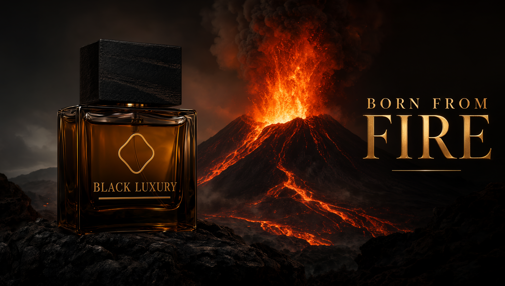

AI / COMMERCIAL PRODUCTION
AI Commercials
Cinematic advertising concepts created with generative AI, video production and post-production.

01 / Signature projectBlack Luxury
Black Luxury
Born From Fire
A cinematic fragrance commercial blending AI-generated imagery, motion, sound design and DaVinci Resolve editing.
Explore case study ↗